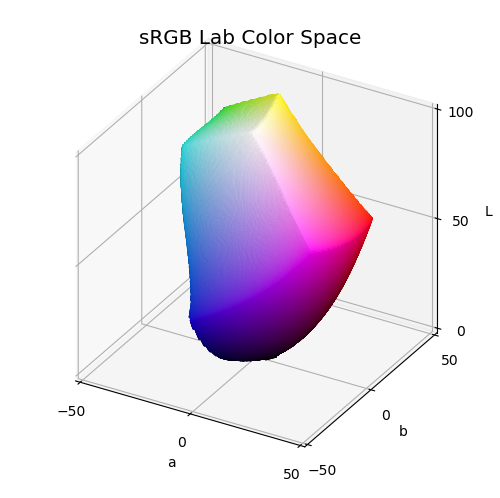
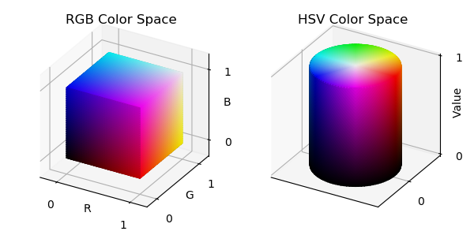

Color Space¶
 For the Lab surface, the algorithm is based on using the spherical surface vertices as directional unit vectors in Lab space. Then, searching for out-of-gamut colors is performed along directions using a simple binary chop algorithm. Not the fastest tool in the shed but it digs the hole.
import warnings
import numpy as np
from matplotlib import pyplot as plt
import matplotlib.colors as colors
import s3dlib.surface as s3d
from colorspacious import cspace_converter
#.. Lab Color Space
labRange = 50
# 1. Define function to examine ...............
def dirBound(direction) :
# simple binary-chop to determime limits in a Lab direction.
#........................................
def rgbErr(lab) :
# determine out of gamut error.
rgb = cspace_converter("CAM02-UCS", "sRGB1" )(lab)
rgbRng = np.clip(rgb,0,1)
errMagn = np.linalg.norm(rgb-rgbRng)
return errMagn
#........................................
def toLab(normal, n) :
# centered at [50,0,0]
Lmax, abMax = 50, labRange
L = Lmax*( n*normal[0] + 1.0 )
a = n*abMax*normal[1]
b = n*abMax*normal[2]
return [L,a,b]
#........................................
normal = direction/np.linalg.norm(direction)
maxdir = np.amax(np.abs(normal))
nDir = normal/maxdir
nLw, nHi = 0, 1
maxErr, maxRGBerr, maxChops = 0.001, 0.004, 18
inGamut = toLab(nDir,nLw)
lastRGBgoodValue = cspace_converter("CAM02-UCS", "sRGB1" )(inGamut)
delta_rgbErr = 0
for i in range(maxChops) :
nMd = (nHi+nLw)/2
tempGamut = toLab(nDir,nMd)
errMd = rgbErr( toLab(nDir,nMd))
if errMd < maxErr :
nLw = nMd
inGamut = tempGamut
oldRGBgoodValue = lastRGBgoodValue
lastRGBgoodValue = cspace_converter("CAM02-UCS", "sRGB1" )(inGamut)
delta_rgbErr = np.linalg.norm(lastRGBgoodValue-oldRGBgoodValue)
if delta_rgbErr < maxRGBerr : break
else :
nHi = nMd
if i is maxChops-1 :
chopErr = delta_rgbErr*255/np.sqrt(3)
if chopErr > 2 :
warnings.warn('BC algorithm maxed out!! {:6.2f}'.format(chopErr ))
return inGamut
def toCoor(xyz) :
dir = np.transpose(xyz)
labCoor = []
for d in dir :
l,a,b = dirBound(d)
l = l/50 -1
a = a/labRange
b = b/labRange
labCoor.append([a,b,l])
return np.transpose(labCoor)
def labColor(rtp) :
x,y,z= s3d.SphericalSurface.coor_convert(rtp, tocart=True)
L = 50*(z+1)
a = labRange*x
b = labRange*y
Lab = np.transpose([L,a,b])
rgb = cspace_converter("CAM02-UCS", "sRGB1" )(Lab)
return np.transpose(rgb)
# Setup surface ................................................
rez=5
surface = s3d.SphericalSurface(rez)
labCoor = toCoor(surface.vertices)
print("lab coordinate calculation completed....")
surface.map_geom_from_op( lambda rtp : labCoor , returnxyz=True)
surface.map_color_from_op(labColor).shade(.5)
surface.transform(translate=[0,0,1])
surface.transform(scale=labRange)
# Construct figure, add surface, plot ..........................
fig = plt.figure(figsize=(5,5))
ax = plt.axes(projection='3d')
ax.set(xlim=(-50,50), ylim=(-50,50), zlim=(0,100))
ax.set_xticks([-50,0,50])
ax.set_yticks([-50,0,50])
ax.set_zticks([0,50,100])
ax.set_xlabel('a')
ax.set_ylabel('b')
ax.set_zlabel('L')
ax.set_title( 'sRGB Lab Color Space', fontsize='x-large' )
ax.set_proj_type('ortho')
ax.add_collection3d(surface)
fig.tight_layout()
plt.show()
For the RGB and HSV surfaces, a unit surface is set in the native color space coordinate system and color mapped directly.
import numpy as np
import matplotlib.pyplot as plt
import s3dlib.surface as s3d
#.. RGB and HSV Color Spaces
# 1. Define functions to examine ....................................
def hsvColor(rtz) :
r,t,z = rtz
return t/(2*np.pi), r, z # all values are in [0,1]
def Cylinder(rez) :
# .....................................................
def fold(rtz) :
r,t,z = rtz
zeros = np.zeros(len(z))
ones = np.ones(len(z))
# fold the cylinder into 3 parts..
alpha = -2*z + 2
alpha = 2*(ones-z)
alpha = np.where( z <= 0.5, ones , alpha )
alpha = np.where( z <= -.5, 2*(ones+z) , alpha )
beta = ones
beta = np.where( z <= 0.5, 2*z , beta)
beta = np.where( z <= -.5, -ones, beta)
R = np.clip(alpha,0.001,1)
Z = beta
return R,t,Z
# .....................................................
surface = s3d.CylindricalSurface(rez)
surface.map_geom_from_op( lambda rtz : fold(rtz) )
surface.name = 'cylinder'
return surface
def Cube(rez) :
v = [
[ 0, 0, 0 ], [ 0, 1, 0 ], [ 1 , 1, 0 ], [ 1, 0, 0 ],
[ 0, 0, 1 ], [ 0, 1, 1 ], [ 1 , 1, 1 ], [ 1, 0, 1 ] ]
f = [ [0,1,2,3], [3,2,6,7], [2,1,5,6], [1,0,4,5], [0,3,7,4], [4,7,6,5] ]
vertexCoor = np.array(v).astype(float)
faceIndices = np.array(f)
surface = s3d.Surface3DCollection(vertexCoor, faceIndices)
surface.transform(scale=2, translate=[-1,-1,-1])
surface.triangulate(rez)
surface.name = 'cube'
return surface
# 2. Setup and map surfaces .........................................
rez = 5
rgb_cube = Cube(rez)
rgb_cube.transform(scale=.5,translate=[.5,.5,.5])
rgb_cube.map_color_from_op( lambda xyz : xyz).shade(.5)
hsv_cyl = Cylinder(rez)
hsv_cyl.transform(scale=[1,1,0.5],translate=[0,0,0.5])
hsv_cyl.map_color_from_op(hsvColor,rgb=False).shade(.5)
# 3. Construct figure, add surfaces, and plot .....................
hsv_minmax = (-1.3,1.3)
rgb_minmax, rgb_ticks = (-0.2,1.2) , [0,1]
fig = plt.figure(figsize=(6,3))
ax1 = fig.add_subplot(121, projection='3d')
ax1.set(xlim=rgb_minmax, ylim=rgb_minmax, zlim=rgb_minmax)
ax1.set_xticks(rgb_ticks)
ax1.set_yticks(rgb_ticks)
ax1.set_zticks(rgb_ticks)
ax1.set_xlabel('R', labelpad=-10)
ax1.set_ylabel('G', labelpad=-10)
ax1.set_zlabel('B', labelpad=-10)
ax1.set_title( 'RGB Color Space' )
ax1.set_proj_type('ortho')
ax2 = fig.add_subplot(122, projection='3d')
ax2.set(xlim=hsv_minmax, ylim=hsv_minmax, zlim=(0,1))
ax2.set_xticks([])
ax2.set_yticks([0])
ax2.set_zticks([0,1])
ax2.set_zlabel('Value', labelpad=-10)
ax2.set_title( 'HSV Color Space' )
ax2.set_proj_type('ortho')
ax1.add_collection3d(rgb_cube)
ax2.add_collection3d(hsv_cyl)
fig.tight_layout()
plt.show()